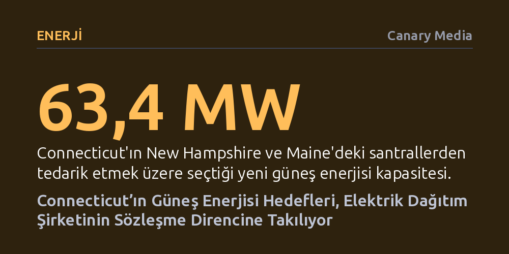

ENERJI · Canary Media · 2026-10-08
Connecticut’ın seçtiği yeni güneş enerjisi projeleri, eyaletin en büyük dağıtım şirketi Eversource’un yüksek maliyet ve politika belirsizlikleri gerekçesiyle sözleşme imzalamaktan kaçınması nedeniyle tıkanıyor. Dağıtım şirketinin bu direnci, eyaletin 2040 yılındaki yüzde 100 temiz enerji hedefini doğrudan riske atıyor.
Temiz enerji hedefleri belirlemenin tek başına yeterli olmadığını; dağıtım şirketlerinin maliyet ve piyasa risklerini öne sürerek kamu politikalarını nasıl kilitleyebileceğini gösteriyor.

Connecticut yönetimi, iklim kriziyle mücadele kapsamında 2040 yılına kadar elektrik şebekesini tamamen temiz enerjiye geçirme hedefi doğrultusunda yeni bir adım attı. Eyalet, artan elektrik talebini karşılarken hem sera gazı salımlarını azaltmak hem de fiyatları dizginlemek amacıyla komşu eyaletler Maine ve New Hampshire’da kurulacak güneş tarlalarından 63,4 megavatlık elektrik satın alacağını duyurdu. Bu adım, bölgesel çapta yürütülen temiz enerji tedarik sürecinin en taze halkasını oluşturuyor.
Ne var ki eyalet yönetiminin projeleri seçmiş olması, elektriğin şebekeye akacağı anlamına gelmiyor. Santralleri inşa edecek geliştiricilerin, öncelikle elektriği iletip tüketicilere ulaştıracak dağıtım şirketleriyle uzun vadeli alım sözleşmelerini tamamlaması gerekiyor. Tam da bu aşamada, Connecticut’ın en büyük elektrik dağıtım şirketi olan Eversource’un projelerle sözleşme imzalamaya yanaşmaması, eyaletin iddialı hedeflerinin geleceğini belirsizliğe sürüklüyor.
Eversource’un son ihale karşısındaki tereddüdü sürpriz değil. Şirket, Aralık 2025’te gerçekleştirilen önceki tedarik turunda seçilen 54 megavatlık güneş enerjisi projesi için de sözleşme imzalamayı aylardır erteliyor. Hatta geçtiğimiz mart ayında eyalet enerji düzenleme kurumuna resmi bir mektup gönderen dağıtım devi, mevcut koşullar altında bu anlaşmalara imza atmayacağını açıkça bildirdi.
Dağıtım şirketinin bu tavrının arkasında iki temel gerekçe yatıyor: Elektrik fiyatlarının piyasa seviyesinin üzerinde seyretmesi ve Connecticut’ın enerji politikasında henüz çözüme kavuşturulmamış belirsizlikler bulunması. Eversource, tüketicilerin fatura yükünün zirve yaptığı bir dönemde piyasa dalgalanmalarına karşı sağlam bir stratejik zemin olmadan bu maliyetlerin altına girmek istemediğini; Massachusetts gibi komşu eyaletlerle kıyaslandığında Connecticut’ın uzun vadeli net bir yenilenebilir enerji çerçevesi sunamadığını savunuyor.
Connecticut’ın büyük ölçekli güneş enerjisi tedarikinde yaşadığı zorluklar yeni ortaya çıkmış bir durum değil. Eyalette 2022 yılından bu yana ihaleler yoluyla seçilen kapasitenin yalnızca 71 megavatı devreye alınabildi. Üstelik 2024 yılında Connecticut ve Maine’deki santrallerden 518 megavatlık devasa bir kapasite tedarik edilmesi planlanmış, ancak geliştiriciler ile dağıtım şirketlerinin anlaşamaması nedeniyle proje tamamen rafa kalkmıştı.
Bu sözleşme krizinin sahaya yansıması ise geliştirici şirketleri strateji değiştirmeye zorluyor. Örneğin doğu Connecticut’ta 12,5 megavatlık kapasite sağlaması öngörülen Husky Solar projesinin geliştiricisi Verogy, belirsizlik nedeniyle planlarını revize etmek ve eyalet yer seçim kurulunun incelemesini beklemek zorunda kaldı. Çok eyaletli bir girişimin parçası olan ve Maine ile Massachusetts’e de enerji sağlaması planlanan bu santral için nihai kararın ancak 2027’nin ilk çeyreğinde çıkması bekleniyor.
Yine de sektör bütünüyle umutsuz değil. Eversource sözcüsü Tricia Modifica şirketin tutumuna ilişkin olarak, "İki bekleyen güneş enerjisi sözleşmesinde ilerleme kaydettik ve başarıyla sonuçlanırsa bunları eyalet düzenleyicilerine sunacağız," diyerek müzakerelerin tamamen kopmadığını ifade ediyor. Şirket ile eyalet yönetimi arasında görüşmeler sürse de henüz bağlayıcı bir taahhüt verilmiş değil.
Dağıtım şirketlerinin yarattığı tıkanıklık, eyalet yönetimini alım modellerini kökten değiştirmeyi düşünmeye yöneltti. Connecticut Enerji ve Çevre Koruma Dairesi (DEEP), gelecekteki ihalelerde dağıtım şirketlerini tamamen aradan çıkarabilecek yeni yöntemleri gündeme getirdi. Bu yaklaşıma göre geleneksel enerji alım anlaşmaları yerine bağımsız bir kamu tüzel kişiliği alıcı olarak atanabilir veya projelerin finansmanı alternatif sözleşme mekanizmaları üzerinden sağlanabilir.
Tüm bu iç anlaşmazlıklara rağmen, New England bölgesindeki eyaletler arası dayanışma temiz enerji piyasasına can suyu olmaya devam ediyor. Dört eyaletin ortak katılımıyla 173 megavatlık kapasite bağlanan 2025 ihalesinin ardından, son alımda da üç eyalet 102 megavatlık anlaşmaya imza attı. Ancak temiz enerji sektörü temsilcileri, bölgenin yatırımcılar için güvenilir bir pazar olarak kalabilmesi adına Connecticut’ın dağıtım şirketleriyle yaşadığı bu anlaşmazlığı hızla çözmesi gerektiği konusunda uyarıyor.